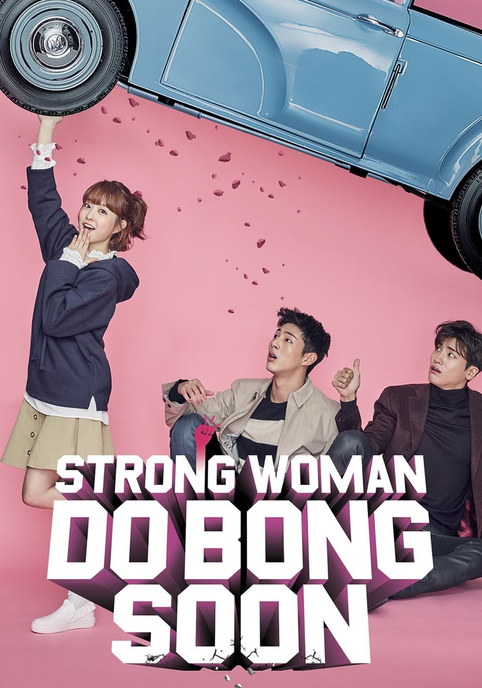
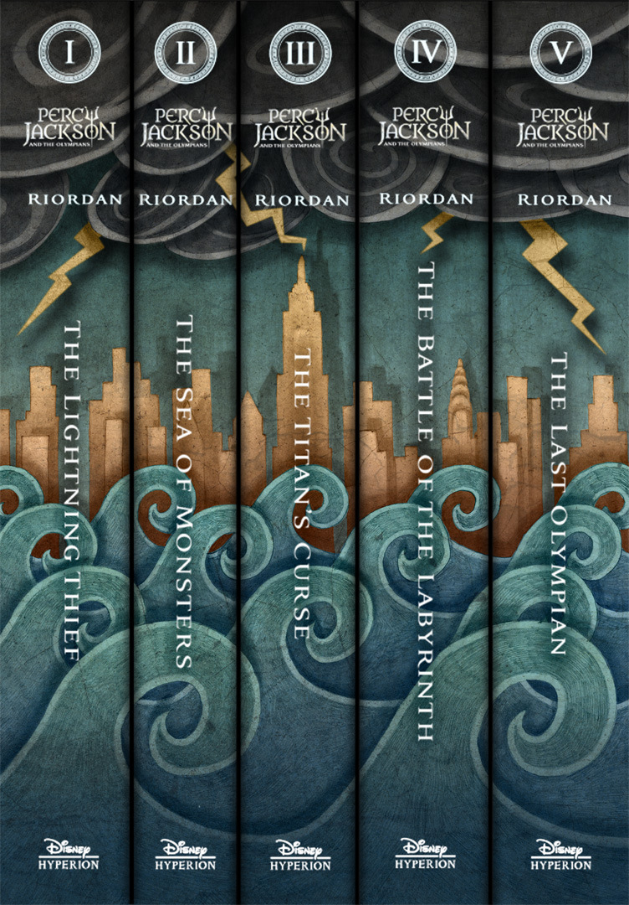
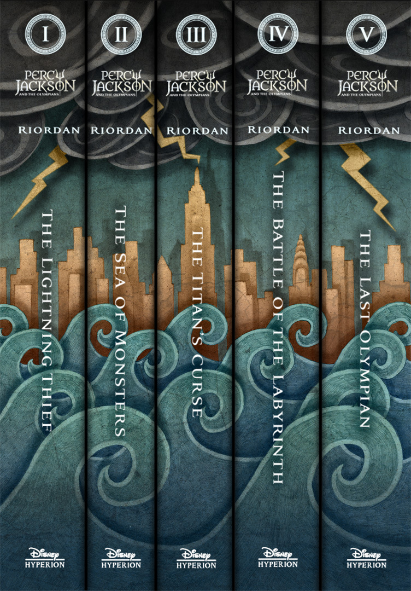

Some of my Favorite Things
Asian Dramas, typically Korean and romance

K-pop/K-music (Casual listener)
Reading, mainly fiction: romance, mystery, and adventure
Strong Woman Do Bong-soon is my absolute favorite.
I listen to a large range of artists because I don't
really have a faorite genre. If I like the song, then
I like it. Some artists I listen to are GOT7, Straykids,
TWICE, Lee Mujin, and random AOMG and DPR artists.
Here are 2 songs:
Drive Me to the Moon by GOT7
Astronaut by Lee Mujin

 

I don't read as much mystery, but I love Sherlock Holmes. I also read webtoons, but not often because I hate waiting for updates.